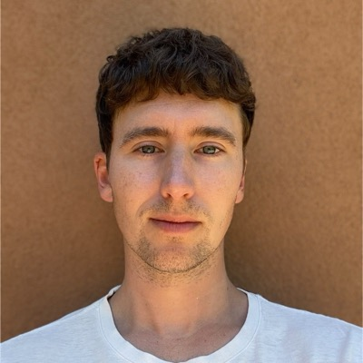

 |
Sam JonesSenior Software EngineerCo-founder, Refract Studio Santa Fe, New Mexico bsamjones@gmail.com |
I'm a senior software engineer and co-founder of Refract Studio, which I run with Lauren Cason in Santa Fe. We design and build products across healthcare, computer vision, public art, and immersive technology.
I design the architecture for what we ship, from distributed systems to on-device computer vision to multiplayer XR. I like working inside real constraints: hospital basements with limited wifi, phones on a city street, a room full of strangers sharing one virtual space.
Over the past decade I've worked with Google, Snap, IKEA, Meow Wolf, and the cities of Albuquerque and Santa Fe. Our work has won MIT Reality Hack and MIT Founders Lab and been nominated for Webby and Auggie awards.
On-device computer vision for surgical sterile processing. It recognizes instruments, gives processing guidance, and verifies trays.
Browser-based AR portals to Omega Mart on the Las Vegas Strip, with no app download. Webby finalist, 2025.
An 18-mile public art experience along Albuquerque's Central Avenue for the Route 66 Centennial, with browser-based AR by more than 20 New Mexico artists.

An AR tour of Santa Fe's art and history, made with the City of Santa Fe.

EpiPen training on Snap Spectacles, with step-by-step guidance and real-time feedback. First place, Snap Lensathon 2024.

AR on Snap Spectacles that helps people set walker height and walk with safer posture, in English and Diné bizaad. Built in 72 hours at MIT Reality Hack, where it won the Gold Prize and the MIT Founders Lab Grand Prize.

A birth education and planning app that helps expecting families prepare with clear, evidence-based guidance.

An LLM home assistant for SPACE10, IKEA's innovation lab, that shares environmental information the way a friend would.

Web AR portals that open from places around New Mexico into Meow Wolf's House of Eternal Return.

A live-action Magic Leap performance at Meow Wolf, named one of Forbes' top XR installations of 2019.

A crossover physical and digital activation at Meow Wolf's House of Eternal Return.

Co-founder and Senior Software Engineer, Refract Studio, Santa Fe, NM. 2021 to present.
Software Developer, Meow Wolf, Santa Fe, NM. 2018 to 2022.
Full Stack Developer, Iterative Consulting, Albuquerque, NM. 2017 to 2018. Repaired and scaled codebases for Series A startups.
Freelance Full Stack Developer, Austin, TX. 2014 to 2017. Rails and Node.js apps for People Pattern, Everfest, and Outrider.
MIT Reality Hack, First Place, Lead Engineer (2025). Webby Awards Finalist, Meow Wolf AR (2025). Snap Lensathon, First Place (2024).
Oregon State University, B.S. Computer Science. Washington State University, B.A. Public Relations.